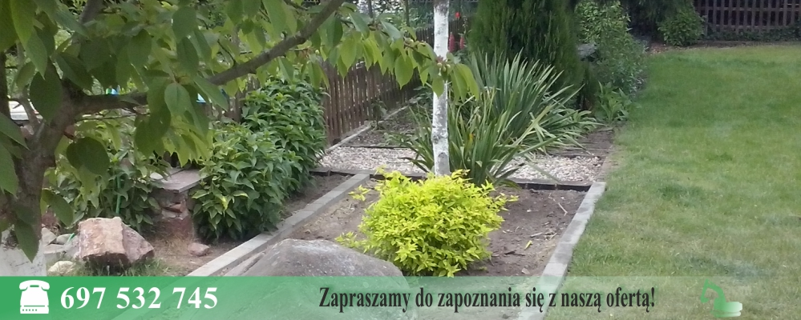
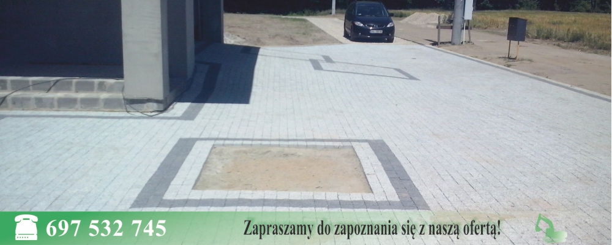
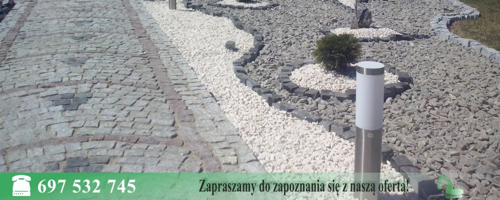

Firma Uslugowa Arkadiusz Matuszczak
Uslugi Minikoparka

Brukarstwo

Ogrodnictwo

Bootstrap Carousel
Strona Glowna
Kontakt
Oferta
Lokalizacja
Galeria
Menu
Nasza firma świadczy usługi w zakresie:
MELIORACJA:
odwadnianie terenu
drenaż opaskowy
osuszanie i izolacja fundamentów
montaż dren (zarówno w ogrodach jak i na polach uprawnych)
czyszczenie i konserwacja urządzeń melioracyjnych
budowa zastawek wodnych
kopanie, odmulanie, i koszenie rowów
kopanie stawów i oczek wodnych
faszynowanie i wzmacnianie nabrzeży
czyszczenie i budowa przepustów
roboty ziemne (usługi minikoparką)
OGRODNICTWO I BRUKARSTWO:
zakładanie trawników
koszenie, karczowanie i niwelacja terenu
nawadnianie
budowa ogrodzeń
budowa obrzeży z kostki brukowej lub granitowej
układanie obrzeży betonowych
układanie kostki brukowej, kostki granitowej, i kamienia polnego (łupanego)
wszystkie prace związane z utrzymywaniem i pielęgnacją ogrodu